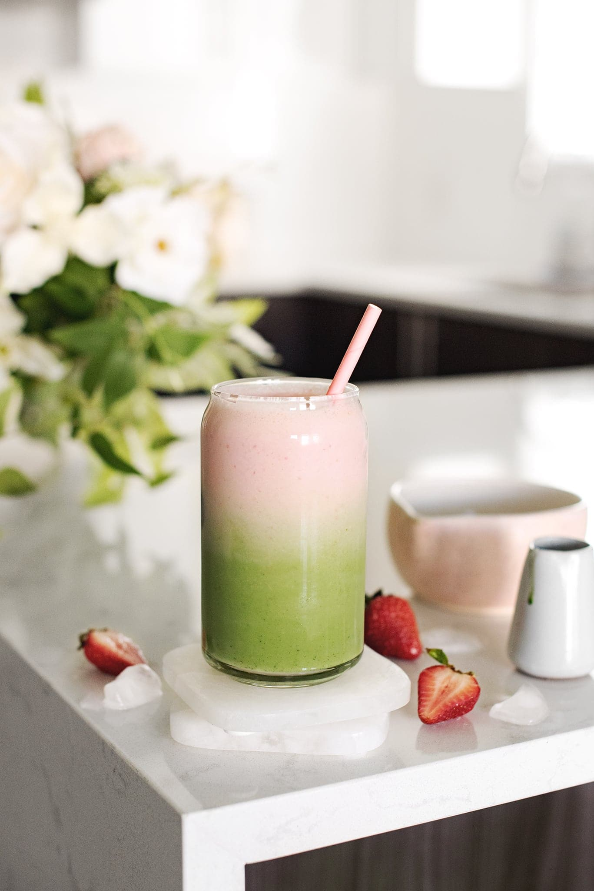

Strawberry Matcha Latte

Description
Delicious and refreshing ice matcha latte with strawberry puree.
Ingredients
- 1 teaspoon matcha powder
- 2 oz hot water
- 1 teaspoon liquid sweetener
- 6 oz milk
- ice
- 2-3 medium strawberries
- 2 oz heavy cream
- 1 oz milk
- 1 teaspoon sweetener
Steps
- In a small bowl, sift in matcha powder. Pour in hot water and whisk vigorously with a bamboo whisk or milk frother until dissolved and slightly foamy on top. Stir in your sweetener while it's still warm.
- Fill a glass about ¾ full with ice. Pour in milk and matcha. Stir to combine.
- In a small bullet blender, blend together strawberries, heavy cream, milk, and sweetener for 5-10 seconds until the consistency resembles melted ice cream.
- Pour on top of the matcha latte and give it a gentle stir to blend the layers into a gradient.